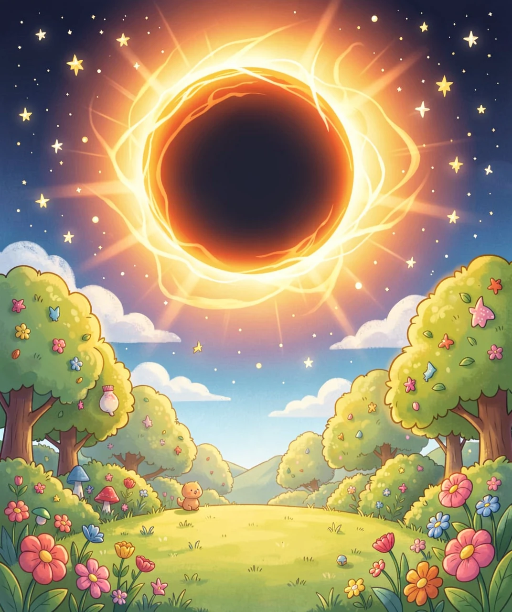
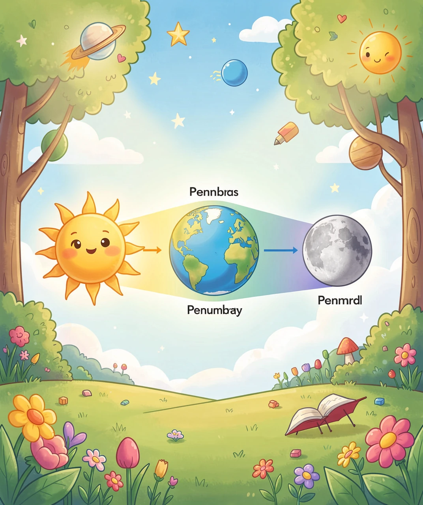
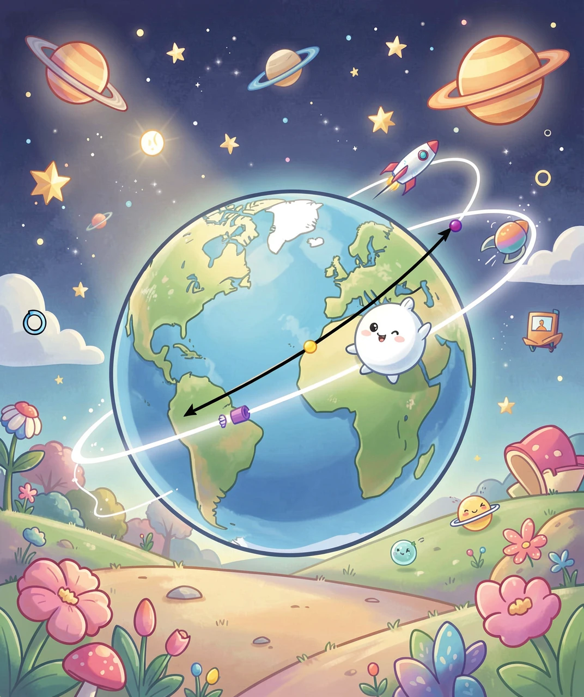
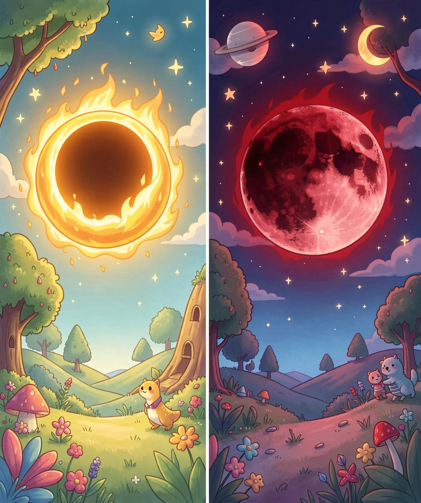
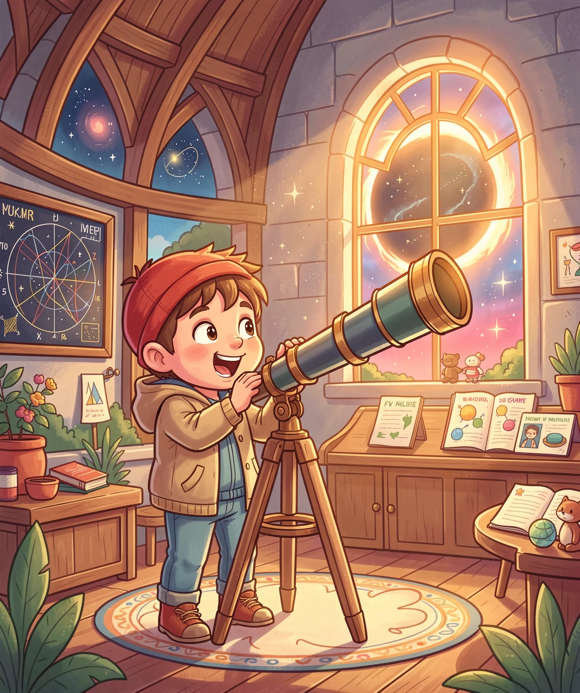

宇宙里的「影子游戏」
想象一下：大白天，太阳明晃晃地挂在天上，突然——天慢慢地暗了下来。星星出来了，鸟儿急急忙忙飞回巢穴，气温骤降。好像有人把太阳「关掉」了。
这就是日食。古人对它的反应是恐惧——他们认为天狗在吞吃太阳！中国的《尚书》记载了公元前 2134 年的一次日食，当时的人们敲锣打鼓、放弓箭，试图吓跑「天狗」。
而月食呢？你有没有见过满月突然变成暗红色？古人说那是「天狗吃月亮」，也是不祥之兆。
但现在的我们知道：日食和月食其实只是一场精确的三维影子游戏。参与游戏的只有三个角色：太阳🌞、地球🌍、和月亮🌙。

要理解日食和月食，先要理解一个最简单的物理规律：光沿直线传播。
你玩过手影游戏吗？把手放在手电筒和墙壁之间，墙上就出现了手的影子。为什么会这样？因为光没办法「拐弯」绕过去。
日食和月食的原理，跟手影游戏一模一样——只是光源是太阳、影子制造者是月亮（或地球）。
日食怎么发生的？
月亮恰好走到太阳和地球之间，三个天体排成一条直线（或近似直线）。太阳光照向地球，但被月亮挡住了。月亮的影子落在地球上，处在影子区域的人就看不到太阳了——这就是日食。
月食怎么发生的？
反过来：地球恰好走到太阳和月亮之间。太阳光被地球挡住，地球的影子投射到月亮上。月亮原本是靠反射太阳光才亮起来的，现在它跑进了地球的影子里，就变暗了——这就是月食。

如果太阳、地球、月亮总是在一条直线上，那每个月都应该有一次日食和一次月食（月亮绕地球一圈约 29.5 天）。可实际上，日食每年大约只有 2~5 次，月食每年约 2~3 次。为什么这么少？
答案：月球的公转轨道平面是倾斜的。
想象一下：地球绕太阳在一个平面上转（这叫「黄道面」）。但月球绕地球的轨道平面，跟黄道面之间有一个大约 5 度的夹角。
5 度听起来很小？在宇宙尺度上可不小。因为太阳离我们太远，从地球看过去太阳只有约 0.5 度宽（刚好是你伸出一根手指挡住太阳的视角）。5 度的倾斜意味着大部分时间月亮从上或下「错过」了太阳的位置。
那什么时候才能对齐呢？只有当月球恰好经过两个平面的交点（称为「升交点」和「降交点」），并且太阳也恰好在这个交点的方向时，三个天体才真正排成一线。这个时机被称为「食季」（eclipse season），大约每 173 天出现一次，每次持续约 34 天。

不是所有日食都一样壮观。根据「挡光程度」，日食分为三种：
① 日全食（Total Solar Eclipse）——最壮观
月球完全遮住太阳光球层。白天变成「黄昏」，天空中出现日冕（太阳最外层大气，平时被阳光淹没看不到），星星在中午出现。持续时间：最多约 7.5 分钟（通常在 2-3 分钟）。在地球上任意一个固定地点，平均 375 年才发生一次日全食。
② 日偏食（Partial Solar Eclipse）
月球只遮住太阳的一部分。看起来像太阳被「咬了一口」。这是最常见的日食类型。
③ 日环食（Annular Solar Eclipse）——「金戒指」
月球轨道不是正圆形的，而是椭圆形。当月球恰好运行到离地球较远的位置时，它的「视觉大小」就不够完全遮住太阳。结果：月球周围露出一圈明亮的太阳边缘，像一个金色的戒指。被称为「火环」（Ring of Fire）。
月食也分两种：
① 月全食——「血月」
月球完全进入地球的本影。但月球并不会完全消失——它会变成暗红色。为什么？因为太阳光穿过地球大气层时，蓝光被大气散射掉了（这就是为什么天空是蓝色的），只剩下波长最长的红光「拐弯」照射到月球上。所以月全食时的月亮看起来是暗红色的，被称为「血月」（Blood Moon）。
| 类型 | 怎么发生 | 看什么 | 多久一次（全球） |
|---|---|---|---|
| ☀️ 日全食 | 月球完全遮住太阳 | 日冕、星星白天出现 | ~1.5 年一次 |
| ☀️ 日环食 | 月球离太远遮不全 | 「金戒指」火环 | ~1 年一次 |
| ☀️ 日偏食 | 月球只遮一部分 | 太阳被咬了一口 | 最频繁 |
| 🌙 月全食 | 月球完全进地球本影 | 暗红色「血月」 | ~1.5 年一次 |
| 🌙 月偏食 | 月球部分进地球本影 | 月亮一部分变暗 | >2 次/年 |

古人看到太阳被「吃掉」，只会恐惧地祈祷。但到了近代，科学家开始精确计算和预测日食月食的时间。
预测日食需要什么？需要知道：太阳、地球、月球的精确位置和运动轨迹——三者之间的相对运动涉及大量的天体力学计算。但规律是存在的：日食和月食以大约 6585 天（约 18 年 11 天）的周期大致重复，这个周期被称为「沙罗周期」（Saros Cycle），古巴比伦人最早发现了它。
日食还有一个令人惊叹的事实：它之所以完美，纯属巧合。太阳的直径约是月球的 400 倍——恰好，太阳离我们的距离也是月球离我们距离的约 400 倍。所以在地球上看，太阳和月球的「视觉大小」几乎一模一样。这个比例在太阳系所有行星-卫星组合中是独一无二的。如果月球小一点、或远一点、或太阳大一点——我们就永远看不到日全食了。
